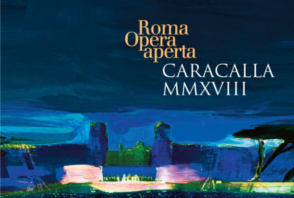
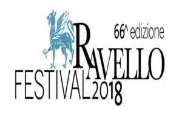
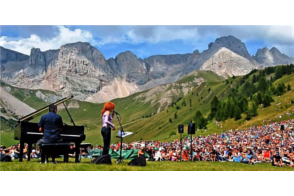
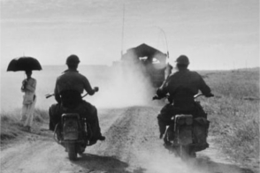
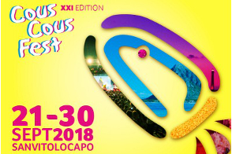
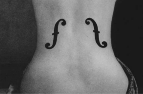

13.06.2018 - 06.08.2018
Caracalla Festival
Live the emotion of great music in Ancient Rome surroundings
11.08.2018 - 23.08.2018
Rossini Opera Festival
39th Edition

30.06.2018 - 25.08.2018
Ravello Festival 2018
Villa Rufolo welcomes you with beauty and music

30.06.2018 - 31.08.2018
Sounds of the Dolomites
High altitude festival on the Trentino Dolomites

25.04.2018 - 09.09.2018
"Robert Capa Retrospective" in Palermo
On the occasion of the celebrations of the 70th anniversary of the foundation of Magnum Photos, the rooms of the Real Albergo dei Poveri host a retrospective dedicated to Capa, a leading figure in 20th-century photojournalism

21.09.2018 - 30.09.2018
Cous Cous Fest
21st Edition

08.04.2018 - 07.10.2018
Man Ray in San Gimignano
Over 100 photographic images of one of the most significant artists of the twentieth century on display at the Gallery of Modern and Contemporary Art of San Gimignano.